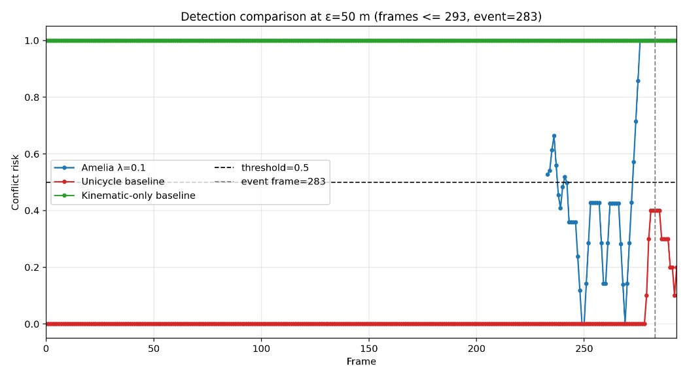
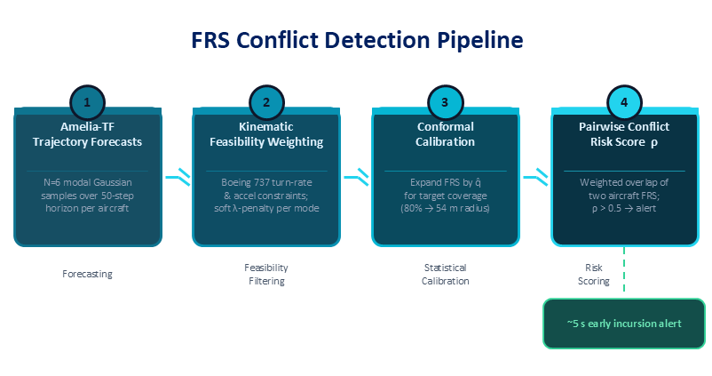
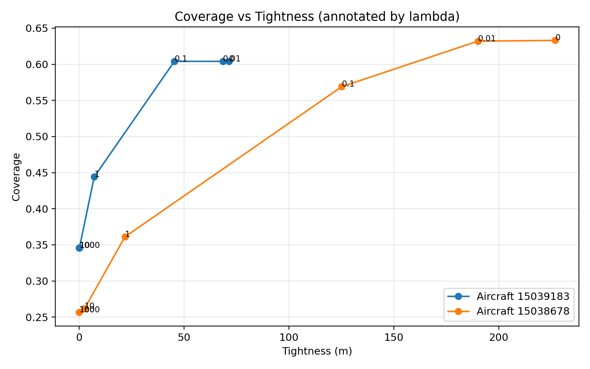
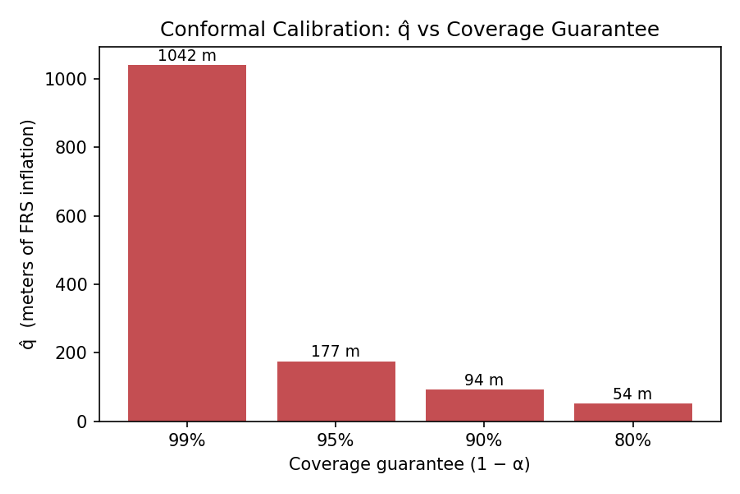
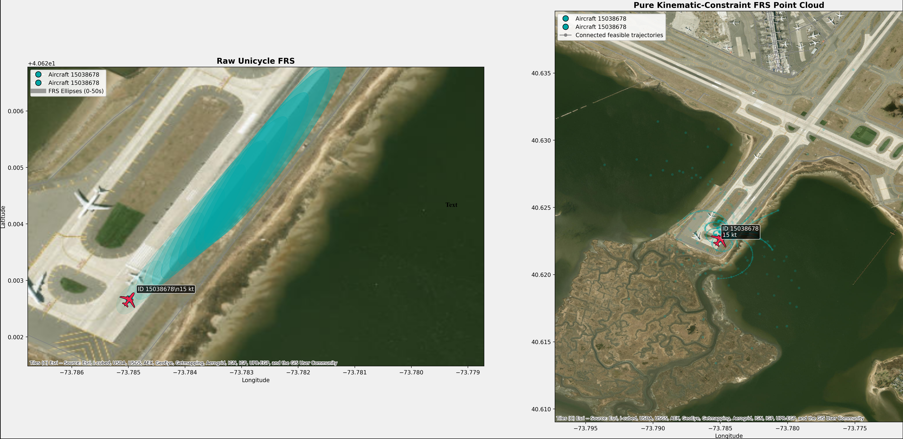
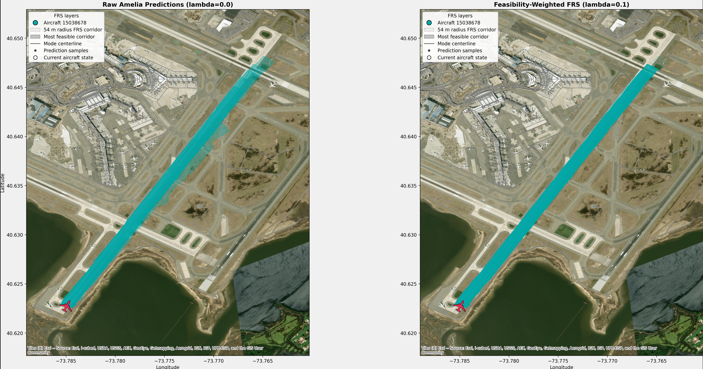
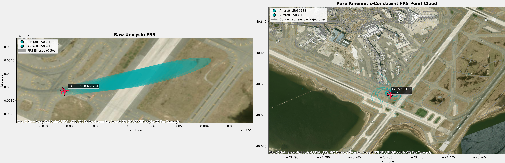
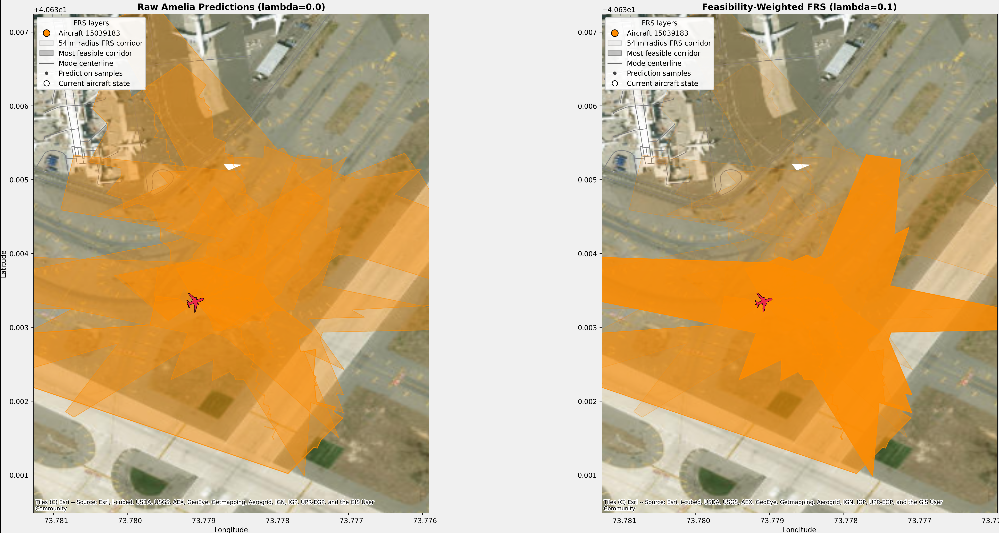

Trajectory Prediction as Forward Reachability for Airport Surface Safety

Overview
Runway incursions, unauthorized aircraft presence on an active runway, have caused near-collisions at major airports and remain an acute safety problem as global air traffic grows. Current alerting systems like the FAA's ASDEX are largely reactive: they detect conflicts from present motion rather than anticipating where aircraft will be in the next several seconds.
This project bridges trajectory forecasting and formal safety analysis by adapting calibrated forward reachable set (FRS) estimation to airport surface operations. Rather than asking "where is the aircraft now?", the system asks "where could it plausibly be in the next T seconds?" and answers with a statistically calibrated, kinematically feasible reachable envelope. Pairwise conflict risk is then scored as the weighted spatial overlap of two aircraft's reachable sets across the prediction horizon.
Applied to a real-world JFK runway incursion sequence, the proposed method issues an alert approximately 5 seconds before the annotated incursion event earlier and more informatively than purely kinematic or simple extrapolation baselines.
The Core Problem & Research Questions: Reactive vs. Predictive Conflict Detection
Airport surface safety systems typically operate on two extremes. Rule-based surveillance detects violations only once they have occurred, providing no reasoning about future occupancy. Learned trajectory forecasters - including the Amelia-TF model used in this project - predict plausible future motion from historical data, but they provide no coverage guarantees and may produce kinematically impossible predictions for aircraft.
The forward reachable set framework sits between these extremes: it characterizes the full envelope of states an aircraft can reach within a given time horizon given its dynamics and control limits. The challenge specific to airport surface operations is that aircraft have very different dynamics from road vehicles - limited turning rates at speed, constrained taxiway topology, and safety-critical separation requirements measured in tens of meters, not lanes.

Approach
The method has three stages, each addressing a distinct limitation of prior work:
1. Forecast-guided reachable sets. Amelia-TF generates N multi-modal trajectory samples conditioned on each aircraft's recent history. These samples ground the FRS in realistic airport-surface behavior - concentrating the reachable envelope on operationally plausible futures rather than every physically possible heading and speed combination.
2. Kinematic feasibility weighting. Each forecast sample is assigned a weight based on how well it adheres to aircraft-specific kinematic constraints: a unicycle model with speed-dependent turn-rate limits derived from Boeing 737 documentation. Rather than hard-rejecting implausible samples, soft weighting (controlled by a sharpness parameter λ) preserves modes with minor violations while penalizing larger ones. An ablation study over λ ∈ {0.001 … 1000} identified a knee at λ = 0.1 where the reachable set tightened significantly without loss of coverage.

3. Conformal calibration. The forecast-weighted FRS is expanded by a scalar radius q̂ calibrated on held-out JFK surface-movement data to achieve a target empirical coverage level. At 80% target coverage, calibration produced a compact 54 m expansion radius - tight enough to be informative while retaining most true future positions inside the set. This calibration step is where statistical guarantees enter: the conformal expansion converts a heuristic forecast envelope into a set with a formal coverage claim, directly extending prior work on conformal prediction for reachability analysis. This step was my primary contribution to this project.

Conflict Risk Scoring
For a pair of aircraft (a, b), pairwise conflict risk at time t is the total weighted mass of forecast-mode pairs whose calibrated reachable sets come within a minimum separation distance ε at any prediction step. A risk score of 0 means no weighted mode pair violates separation; a score of 1 means all weighted mass is in conflict. Evaluating this score over successive time steps produces a risk trace that can be thresholded to issue alerts.
Results
The evaluation scenario is a documented JFK runway incursion: one aircraft taxiing across the runway while another begins a takeoff roll. Three methods are compared:
The kinematic-only baseline considers all physically possible futures regardless of behavioral plausibility, producing a saturated risk trace (ρ ≈ 1.0) throughout - too conservative to be useful for alerting.
The unicycle extrapolation baseline is too narrow, peaking at ρ ≈ 0.4 near the event and never crossing the alert threshold of 0.5 - too optimistic to catch the incursion.
The proposed calibrated FRS crosses the alert threshold approximately 5 seconds before the annotated incursion frame, producing a risk signal that rises sharply and informatively as the aircraft converge. It occupies the middle ground between over-conservative kinematic reachability and under-conservative simple extrapolation.




Key Takeaways
The central lesson of this project is that trajectory forecasters and formal safety methods are not in opposition - they are complementary. Forecasters supply behavioral realism; conformal calibration supplies statistical coverage guarantees; kinematic weighting supplies physical plausibility. None of these alone produces a useful conflict detection signal on airport surfaces, but their combination does.
Important limitations remain: the coverage guarantee assumes calibration and deployment data come from similar operating conditions, meaning the system would need airport-specific recalibration and out-of-distribution fallback before real deployment. The method also does not yet generalize across airports with different runway and taxiway geometries - extending it is a natural next step, as is adapting q̂ online as new ground-truth data becomes available during operations.
Skills & Tools
Python · Conformal Prediction · Forward Reachable Sets · Trajectory Forecasting · Amelia-TF · Kinematic Modeling · Unicycle Dynamics · Statistical Coverage Guarantees · Airport Surface Safety · Ablation Studies · Risk Scoring
← Back to Projects